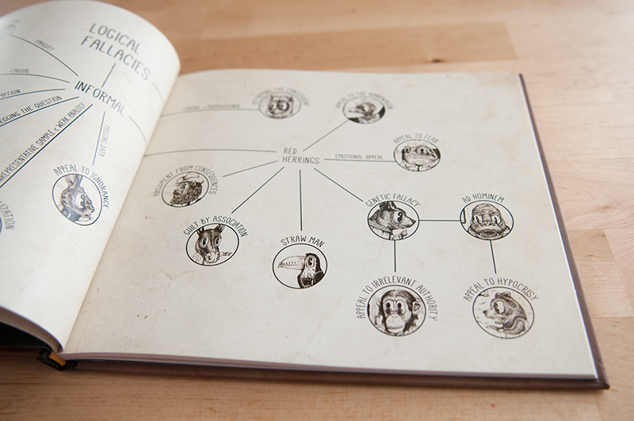
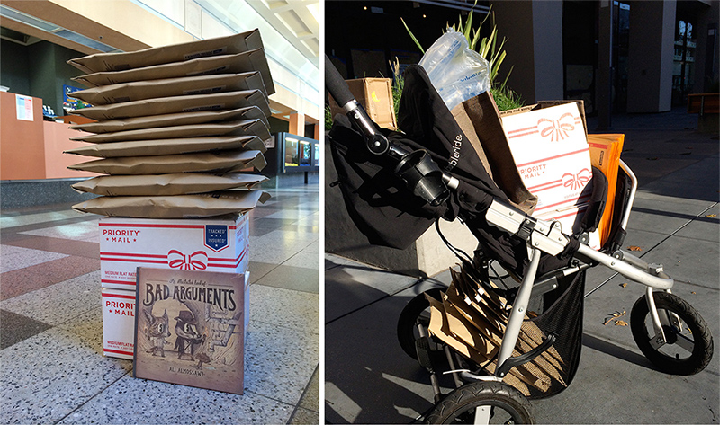
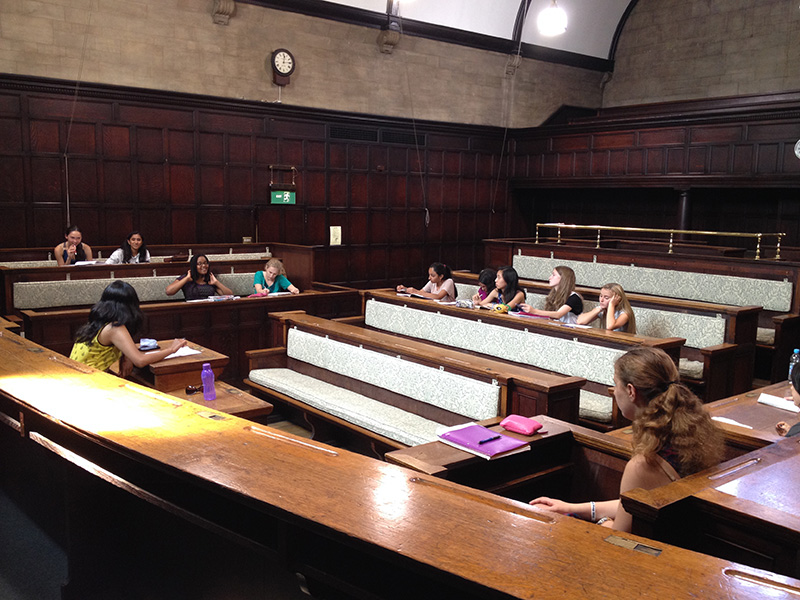
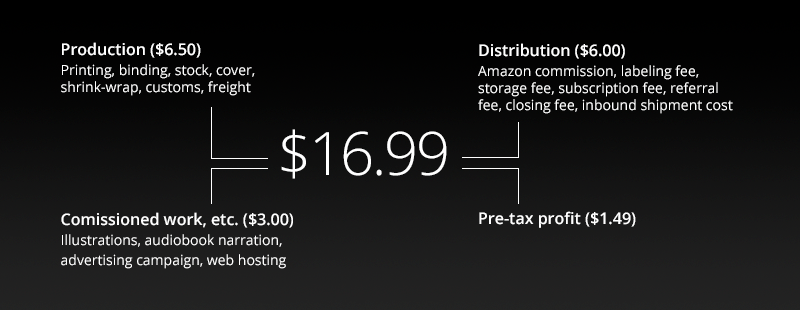
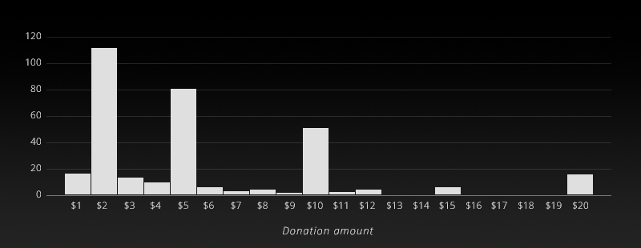
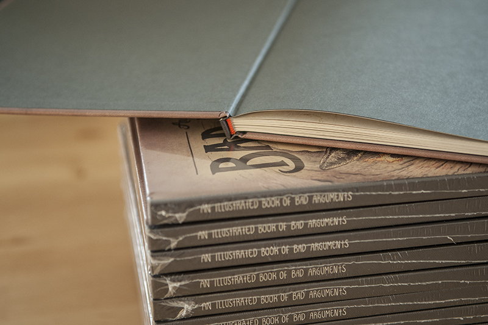
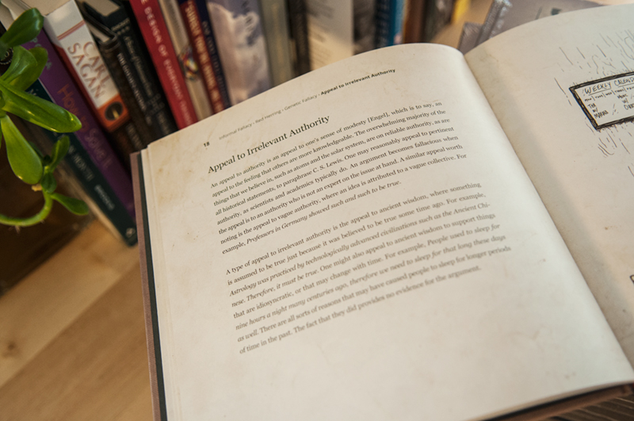

THE FIRST EDITION · BUY IN UK · BUY IN AUSTRALIA · BUY IN SAN FRANCISCO
GREETINGS · SHIPPING · FINANCES · PHOTOS · PROMO · COMPETITION · RUSSIAN · KOREAN · ITALIAN · OTHER TRANSLATIONS
Available at Amazon, Barnes & Noble, Books-A-Million, Indiebound, Powells, Workman
Available in the UK at Amazon.co.uk
· US, Canada edition (Sep 23, 2014) published by The Experiment and distributed by Workman Publishing
· Australia, New Zealand edition (Nov 24, 2014) published by Scribe Publications and distributed by Penguin
· UK edition (Dec 4, 2014) published by Scribe Publications and distributed by Macmillan
Other editions
· Russian edition published by Dodo Magic Bookroom
· Italian edition published by UAAR
· Korean edition published by Donquixote Publishing Co.
· Slovak edition published by Citadella
· French edition published by Larousse
· Simplified Chinese edition published by Thinkingdom Media
· Complex Chinese edition published by Wu-Nan Books
· Brazilian Portuguese edition published by Sextante
· Vietnamese edition published by Sách Khai Tâm

The first edition — a retrospective
Today (May 31, 2014) marks the last day on which the book’s first edition will be available for purchase. I would like to thank everyone whom I have had the pleasure to stand beside and, together, watch this project move from its embryonic stage into flight mode.
That includes everyone who has taken the time to send in their comments, suggestions and critiques, the 757,000 readers of the online edition, the 446 readers who supported the project with donations, the 2,898 readers who bought the print edition, the many people who took the time to write about the book, as well as the bookshops that were kind enough to stock the title, obscure as it was when it first came out. And, of course, a special thanks to the volunteers who have put in the time to translate the online edition into their own languages. The Spanish translation by María Corchero has been read over 30,000 times so far, and I’m excited about the prospect of several other translations seeing the light of day soon.
It has been a wonderful journey, and I trust that it is one of many to come.
Since December 6, 2013, 73.18% of the first print run has been sold, which amounts to 2,898 copies. Average daily sales remained healthy over that period. 85.14% of books sold through Amazon.com, with the rest selling through a small number of bookshops in San Francisco, Australia and England. A very special thanks to Foyles who have been phenomenal in supporting the project from the very beginning and to all the other bookshops for obliging my request to stock the book. The wonderful staff at Book Passage were kind enough to choose the book as a Staff Pick.
In terms of financials, the project cost $53,442.05 in initial investment and running costs. The net revenue as of today, including receivables, is $60,296.82. Of that, $2,112 is from donations. This means that the project will likely end up turning a profit of $6,854.77. All of that money will go towards financing an upcoming work, tentatively titled Hans in the Land of Bards, which aims to teach young readers about fundamental algorithms through the means of a short story. The project, which I am very excited about, will be available online for free under a Creative Commons license.
Selling through Amazon.com’s Marketplace introduced a number of constraints, one of which was that the book could not be shipped to Canada. That did not stop Canadian readers from enjoying the print edition, however, seeing as I had the immense pleasure of packing and sending 89 copies their way! Pushing boxes of books to the Post Office in my daughter’s stroller bemused many a passerby and proved a welcome, albeit inadvertent, source of social interaction.
The project corroborates a finding that others have voiced in the past, that it is possible to successfully finance a self-published book. Though the priming stage demands a lot of time, effort and tenacity, particularly for a first-timer, smoother sailing thereafter is certainly an attainable aspiration.
Since the print edition was first released, a number of publishers have shown interest in obtaining the rights to the book, a venture that I have been willing to consider for three reasons. Firstly, because a good publisher would be able to better distribute the book, secondly, because they would likely be able to better edit it, and thirdly, because such a development would free me up to work on further educational projects.
I am happy to announce that going forward, the print edition of the book will be in the hands of The Experiment, an independent publisher based in New York. The online version of the book will of course remain as is, which is to say freely available, under a Creative Commons license. The Experiment’s books cover a wide range of practical non-fiction and are distributed by Workman Publishing.
The second edition of An Illustrated Book of Bad Arguments will retail for $14.95 and will incorporate all of the changes that have been made to the book since the first edition was printed. The second edition is scheduled for release in late September 2014 and will be available for preorder starting June 1, 2014. It will be distributed in the UK and Australia by Penguin Books and in the US and Canada by Workman Publishing. For a full list of online retailers that will offer the title, please take a look here.
If you haven't done so already, remember to add yourself to the mailing list (scroll down to the bottom of the main page). Have a great weekend.
— A. A., San Francisco, May 2014
Using the book as a teaching aid
“The kids loved your book and it was really useful in understanding logical argumentation.”
Shreeppriya GK, a graduate student at the University of Oxford, was kind enough to write to me about her experience using the book in her Speech and Debate summer course. In her words:
“The course aimed to familiarise students with rational thinking and logical argumentation, best practices in terms of vocal inflection, stage presence, writing techniques, effective delivery, and rebuttals. The idea was not just to enable the students to speak in public and debate well, but to arouse in them a passion for the written word, a love for the stage, and a desire to wield the power of words to the best of their ability. The introduction covered general aspects of speech and debate, with special emphasis on the impediments to speaking confidently in public.
“We then turned to the master of English rhetoric, William Shakespeare. An in-depth reading and analysis of Mark Antony's Friends, Romans, Countrymen speech in Shakespeare's Julius Caesar: Act III, Scene II brought many dramatic techniques under the spotlight, and some contributions from the world of anthropology and film allowed us to better understand the concepts of binary opposition, red herrings, moral and emotional manipulation, extrapolated statistics, the transferred epithet, the synecdoche, rhetorical questions, teasing an object, metaphorical references, conversational implicature and others.
“A reading of Jawaharlal Nehru's Tryst With Destiny speech and Martin Luther King's I Have A Dream speech helped the class understand contemporary political rhetoric, and practising vocal inflection with the latter aided the students in improving their delivery. The students were then encouraged to write their own speeches using these techniques, on topics ranging from time and technology to the evolution of love. They were then taken through a video playlist consisting of diverse subjects, speakers and styles of inflection ranging from animated misanthropy to kinetic typography against pedantry.
“The class was taken through aspects of logical argumentation and logical fallacies, including Non-Sequiturs, Ad Hominem, Circular Reasoning, Straw man and Guilt by association, among others. They were then introduced to debate using rapid-fire group rounds, followed up by one-on-one debates and rebuttals. The final debate saw teams of two take on each other in a formal setting, arguing on motions like Blogging is an exercise in vanity, The right to die is included in the right to life and others.”
The sections below are outdated, as they refer to the first edition, which is out-of-print. To preorder the newest edition of the book, please refer to the links below.
Amazon, Barnes & Noble, Books-A-Million, Indiebound, Powells, Workman
Greetings
Over the past few months, over 500,000 people have read An Illustrated Book of Bad Arguments. I promised a print version if enough people were interested in one. The response has been outstanding, resulting in a first run that is an order of magnitude larger in quantity than I had forecast.
It gives me great joy to describe the hardback as the culmination of a collaborative effort. Since the online version was published back in July, several readers have written in with their thoughts, critiques and suggestions, all of which have improved the work. They are named below.
A special thanks to the reddit community, Alejandro Giraldo, Dr. Ed Brandon, Laura Hellings, Neil Montgomery, Shana Eddy, María Corchero, Diogo Lindner, Sadiq Alnemer, Pascal Rastoul, Gary Smailes, Preeti Sar, the hundreds of donators, the many people who wrote about the project and helped spread the word about it and the countless others whom I have enjoyed chatting with on Twitter and via email.
A final note, though a lot of care has been put into maintaining the highest levels of quality throughout the production and distribution processes, in the unlikely event that you purchase a book that has even the slightest amount of damage or is otherwise not to your satisfaction, please contact Amazon and they will be happy to make it right. Our partnership with Amazon means that they handle both fulfillment and customer support.
December 6, 2013
Shipping internationally (1st ed.)
Amazon.com can ship to 65 international destinations. Since the books ship from the US, the cost of postage will likely be higher than what readers might prefer to pay. The most pragmatic solution that I have at present to mitigate this inconvenience is to subsidize the cost of postage. If you order the book internationally, please email me a copy of your receipt and I will send you $3.00 via PayPal.
For those in Canada, unfortunately, Amazon.com only ships music, videos and DVDs to Canada and not books. So if you would like a copy of the book, get in touch and I will make sure that you get one.
Readers in London, UK can purchase the book from Foyles and readers in Perth, Australia can purchase it from Crow Books, both of whom have stocked the book.
Where does your money go?
All the profits from the sales of the hardback will go towards covering the cost of commissioned work, the initial advertising campaign, web hosting, production and distribution. At the current retail price, we ought to break-even after selling 75% of the first print run. Any sales beyond that would make it possible to partially finance a second print run. The figure below breaks down the project's costs per unit.
Donations
When I first published the project on July 15, 2013, I decided to share it for free and to allow people to support it with an amount of their choosing. I did not know what to expect. After all, who would pay for a free book?
The first donation came a few hours after the website went live, from a reader in Los Gatos, California and was for $6.00. Since then, 321 people have donated over $1,800 to the project. What is more extraordinary is that 65% of donations are greater than the suggested amount of $2.00.
Below is a histogram that shows the distribution of donations. Thank you.
The beautiful textured cover

Orange endbands and charcoal gray endsheets
High quality, matte coated paper
Buy the audiobook
You can now get An Illustrated Book of Bad Arguments as an audiobook! I have replaced the illustrations with short sketches in which a variety of quirky characters participate. The audiobook is narrated by James Gillies, a former announcer and newsreader for the BBC. I am sure that you will enjoy it.
An important message from a recognizable voice
Despite agreeing to promote the book, the well-known star did not hesitate to let us know what he really thought of the arrangement.
Script: Ali Almossawi
Win an autographed copy
Congratulations to the four winners whose names were picked from the mailing list on November 16: Anuja Singh, Buck Riley, Eddy Barratt and Franz Keferboeck. Each of the winners will be receiving an autographed advance copy of the book in a gift-wrapped package.
Available for purchase at Foyles
For readers in London, England, the book is currently on sale at the Royal Festival Hall branch of Foyles. A special thanks to the wonderful people at Foyles for stocking the book and for shelving it under Foyles' Choice.
Available for purchase at Crow Books
Readers in Perth, Australia, may be interested to know that Crow Books will be stocking the book soon. Crow Books specializes in alternative and independent titles. Take a look at their Facebook page to learn more about their selection of titles.
Available for purchase in San Francisco
Readers in San Francisco may purchase the book from Book Passage in the Ferry Building, Dog Eared Books on Valencia St, Alley Cat Books on 24th St or Adobe Books, also on 24th St. A copy is also available at 826 Valencia: The Writing Center.
Russian edition
It gives me great pleasure to announce that the Moscow-based Dodo Magic Bookroom has obtained the rights to the Russian edition. As of November 24, the book is available for purchase! Dodo Magic Bookroom successfully crowd-sourced the funding for the project, thanks to readers from 27 cities and five countries. The book may also be found at the 15th Moscow International Book Fair.
Korean edition
It gives me equal pleasure to reveal that Seoul-based Don Quixote Publishing Co. has obtained the rights to the Korean edition. Don Quixote Publishing plans to release the Korean edition in July 2014. I look forward to seeing the book in the Korean language.
Italian edition
I am also pleased to reveal that UAAR, a humanist non-profit based in Rome, has obtained the rights to the Italian edition. UAAR is looking towards sharing the book with younger people, which is a very exciting prospect.
Other translations
Several readers have been kind enough to volunteer to translate the online version of the book. The first of these to come out was the Spanish translation by María Corchero. An upcoming Brazilian Portuguese translation is planned for release soon, with others to follow in time. Look out for them shortly. If you're interested in volunteering, please get in touch. I am happy to offer each volunteer a signed copy of the book.